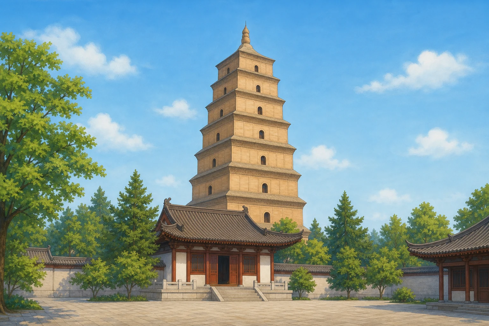

宝塔：屋檐下面藏着什么
Pagodas: What Lies Beneath the Eaves?
阅读难度 · 中等Reading level · Medium
Page 1
它看起来像楼，却不一定是楼
It Looks Like a Tower - but Is It?
This modern picture shows one pavilion-style pagoda, not every Chinese pagoda. Some can be climbed; others have little interior space or are nearly solid.
站在一座塔前，你也许会抬起手指，一层一层数屋檐：“一、二、三、四……”然后自然地猜想，每道屋檐后面都有房间和楼梯。可是古塔最喜欢让眼睛猜错：有的外面看见许多檐，里面却没有同样多的楼层；有的可以登临，有的内部很窄，甚至近乎实心。它首先不是古代的观景楼，而是一种与佛教信仰有关的建筑。
塔的远祖，是起源于南亚的佛教窣堵坡。窣堵坡常用来安置与佛陀或高僧有关的舍利，也成为人们礼拜、绕行和纪念的中心。佛教经过中亚传向中国时，建筑形状没有在某一天突然从“圆碗”变成“高楼”。不同地区的工匠和信众经过许多代尝试，把窣堵坡的覆钵、层台、伞盖等象征，与中国已有的楼阁和木构技术不断重新组合，才出现了多种中国佛塔。
因此，“塔”也不是只有一种样子。塔中可能安置舍利、佛像、经文或其他供奉物；木、砖、石、金属都可以成为材料。楼阁式塔的外观像多层楼，有些内部可以登临；密檐式塔把一层层短檐排得很近，许多并没有与屋檐一一对应的房间。以后再看到塔，先别急着问“能爬多高”，不妨先问：“人们为什么把它建在这里？它守护的是什么？”
Stand in front of a pagoda and you may begin counting the eaves with your finger: “One, two, three, four...” It is easy to imagine a room and staircase behind every roof. Ancient pagodas often trick the eye, however. Some have more rows of eaves than usable floors. Some can be climbed, while others have very little space inside or are nearly solid. A pagoda was not simply an old-fashioned lookout tower. It began as a building connected with Buddhist belief and practice.
The pagoda's distant ancestor is the Buddhist stupa, which began in South Asia. Stupas often enshrined relics connected with the Buddha or respected teachers. They also became places where people honored the Buddha, remembered his teachings, and walked around the sacred structure as an act of devotion. As Buddhism traveled through Central Asia into China, the stupa did not suddenly change from a rounded mound into a tall tower in one easy step. Over many generations, builders and worshippers reworked its domes, platforms, and umbrella-like finials together with Chinese traditions of multistory buildings and timber construction.
That long process produced many kinds of pagodas. A pagoda might hold relics, Buddhist images, sacred texts, or offerings, and it might be built from wood, brick, stone, or metal. Pavilion-style pagodas look more like multistory buildings, and some have stairs. Closely-eaved pagodas stack short rows of eaves tightly together, often without a usable room behind each one. So when you see a pagoda, do not ask only, “How high can I climb?” Ask, “Why was it built here, and what was it meant to protect?”
Page 2
应县木塔：外面五层，里面九层
Yingxian: Five Stories Outside, Nine Levels Inside
This modern illustration suggests the pagoda's height and timber exterior, but it is not an exact reconstruction. The real Yingxian Pagoda is octagonal, with five visible stories and six eaves.
山西应县佛宫寺的释迦塔建于辽代，通常称为应县木塔。它完成于1056年，高度的公布数字因测量方法略有不同，常见数据约为66至67米。它是中国现存最早的木塔，也是世界现存最高的古代木塔之一。可是，如果你只看正面照片，可能会数错它到底有几层。
木塔外观是五层六檐，塔内却有四个藏在平座和屋檐之间的暗层，加起来共有九个内部层次。这些暗层不是为了偷偷多住几户人家，里面密集的柱、梁和斜撑参与连接整座塔。塔身为八角形，内外两圈柱子像两个套在一起的木筒，各层又用梁枋和斗栱连成整体。它让我们看见，“层”可以是外观的故事，也可以是内部结构的故事。
木塔从1056年保存到今天，确实经历了漫长岁月，但人们常把原因说得太简单：“榫卯一晃就吸收地震力量，所以千年不倒。”研究者认为，它的平面形状、双圈柱网、暗层斜撑、梁柱连接和斗栱等许多因素共同影响结构表现；历代维修和现代保护同样重要。今天木塔已经有倾斜、构件老化和累积损伤，专家仍在监测和寻找尽量少干预的加固方法。它不是永远不会倒的神奇积木，而是一件需要人继续照顾的古老实物。
The Sakyamuni Pagoda at Fogong Temple stands in Yingxian County, Shanxi. Usually called the Yingxian Wooden Pagoda, it was completed during the Liao dynasty in 1056. Published measurements vary slightly depending on how the building is measured, but its total height is about 66 to 67 meters. It is China's oldest surviving wooden pagoda and one of the tallest ancient wooden pagodas in the world. Yet if you count only what you see in a photograph, you may get its number of floors wrong.
The exterior shows five stories and six eaves. Inside are four hidden structural levels tucked between the visible stories, making nine levels altogether. These hidden levels were not secret apartments. Their dense columns, beams, and diagonal braces help tie the tower together. The octagonal building also has inner and outer rings of columns, almost like two wooden tubes fitted inside each other. Here, “How many stories?” has two answers: one for the outside appearance and another for the interior structure.
The pagoda's survival since 1056 is remarkable, but it cannot be explained by one magical secret such as “flexible joints absorb every earthquake.” Researchers study many features working together: the octagonal plan, two rings of columns, braced hidden levels, beams, joints, and complex bracket sets. Repairs and continuing conservation have mattered too. Today the tower has leaning sections, aging pieces, and accumulated damage. Specialists monitor it and test ways to support it with as little disturbance as possible. It is not an indestructible wooden toy. It is an old building that still needs care.
Page 3
大雁塔：一本用砖写成的旅行记录
Giant Wild Goose Pagoda: A Journey Written in Brick

This modern illustration captures the square, tapering outline of the Giant Wild Goose Pagoda. Today's seven-story brick tower reflects Tang rebuilding and many later repairs.
另一座塔把我们的目光带到唐代长安，也就是今天的西安。玄奘从印度求法归来，带回数百部用梵文写成的佛教典籍，还有佛像等物品。他在大慈恩寺组织译经，也请求修建一座塔来安置这些重要物品。652年，最初五层的慈恩寺塔建成，后来才渐渐有了“大雁塔”这个名字。
说它“保存经书”没有错，但把它想成一座安静的大图书馆就不够了。对佛教信众来说，经文、佛像和舍利不仅是研究资料，也是值得供奉和礼敬的圣物；塔的建造本身带有宗教意义。玄奘也不是小说《西游记》里会遇见孙悟空的“唐僧”。他是真实的旅行者、僧人和翻译家，几个世纪后，他的旅程才成为小说奇遇的重要灵感。
今天看见的七层砖塔，也不是652年的建筑原封不动保存至今。最初的五层塔使用砖表土心的做法，后来损坏；武则天时期曾重建，层数和高度又经过变化，后世还多次维修。明代1604年的大修又修补和加固了塔身砖面，但说今天只是“明代外壳包着完整唐代内芯”，还是把复杂历史讲成了简单夹心饼。更准确的看法是：这座塔像一本反复修补的旅行记录，唐代的起点仍在，今天的形状却由许多时代共同留下。
Another pagoda carries us to the Tang capital of Chang'an, now the city of Xi'an. The monk Xuanzang returned from India with hundreds of Buddhist texts written in Sanskrit, along with Buddhist images and other sacred objects. At Great Ci'en Temple, he led a major translation project and asked for a pagoda to protect important materials. The first five-story Ci'en Temple Pagoda was built in 652. The name “Giant Wild Goose Pagoda” became attached to it later.
It is true that the pagoda stored texts, but calling it a giant quiet library misses part of the story. For Buddhist worshippers, scriptures, images, and relics were not only materials to read or study. They could also be sacred objects worthy of protection and reverence, and building the pagoda was itself a religious act. Xuanzang was also not the “Tang Monk” who traveled with the Monkey King. He was a real traveler, Buddhist monk, and translator. Centuries later, memories of his journey helped inspire the adventures in the novel Journey to the West.
The seven-story brick pagoda we see today is not the untouched building of 652. The first five-story structure had an earthen core faced with brick and later deteriorated. It was rebuilt during the rule of Empress Wu Zetian, changed in height and number of stories, and repaired many more times. During a major Ming repair in 1604, workers repaired and reinforced the brick exterior. But it is still too simple to call the present tower “a Ming shell wrapped around a complete Tang core.” A better picture is a travel record repaired again and again: its story began in the Tang dynasty, while many periods helped create what survives now.
Page 4
奇数层不是一条万能公式
Odd Numbers Are Not a Magic Formula
最后，再来数一次屋檐。许多著名的中国塔确实使用三、五、七、九或十三这样的奇数。有人用传统的阴阳数字观念解释这种选择：奇数属“阳”，向上耸立的塔也被理解为偏阳的建筑。这是一种有影响的文化解释，却不能反过来变成“每座塔都必须是奇数层”的万能建筑法规。
首先，我们数的东西可能不同。应县木塔外观五层、内部九层，却有六道屋檐；密檐式塔的一排排檐，常常只是塑造向上收束的外形，并不等于可以站人的楼板。其次，塔的用途、时代、地区、材料和修建者都不同，实际形式远比“三、五、七”丰富。甚至有些后来被称作“塔”的建筑，主要用途已经不再是安置佛教圣物。
所以，读一座塔不能只套一个数字答案。我们要分清看得见的檐、走得到的层、藏在里面的结构层，还要问塔中曾供奉什么、后来修过什么。塔真正迷人的地方，不是每一座都遵守同一条秘密规则，而是一个来自远方的佛教建筑传统，怎样在不同地方一次又一次改变形状。
Now count the eaves one more time. Many famous Chinese pagodas do use odd numbers such as three, five, seven, nine, or thirteen. One traditional explanation connects those choices with ideas about yin and yang: odd numbers were classed as yang, and a tall, upward-reaching pagoda could also be understood as yang. This interpretation has influenced the way people explain pagodas, but it should not become a claim that every pagoda had to obey one universal number law.
To begin with, people may be counting different things. Yingxian has five visible stories, nine interior levels, and six eaves. On a closely-eaved pagoda, rows of short roofs help create a soaring outline, but they do not necessarily mark floors where a person can stand. Pagodas also differed by period, region, purpose, material, and patron. Some buildings later called pagodas were no longer mainly used to enshrine Buddhist sacred objects.
Reading a pagoda therefore takes more than applying a number rule. We must separate the eaves we can see, the floors people can enter, and the structural levels hidden inside. We should also ask what the tower once enshrined and how later builders changed it. The wonder of pagodas is not that they all obey one secret formula. It is that a Buddhist building tradition from far away could be reshaped, again and again, in so many places.
小结
In Summary
宝塔从佛教窣堵坡传统发展而来，在中国与本地材料、技术和建筑形式相遇，变成了木塔、砖塔、楼阁式塔、密檐式塔等许多样子。它可能守护舍利、佛像或经文，却不一定能登临；屋檐、外观层数和内部层次也不一定相同。下一次站在塔下，不妨少急着数一层，多问一个“为什么”。
Chinese pagodas developed from the Buddhist stupa tradition as it met local materials, building skills, and architectural forms. The result included timber and brick pagodas, climbable pavilion types, and closely-eaved towers. A pagoda might protect relics, images, or sacred texts, but it was not always meant for climbing, and its eaves might not match its interior floors. The next time you stand beneath one, pause your counting and ask one more “why.”